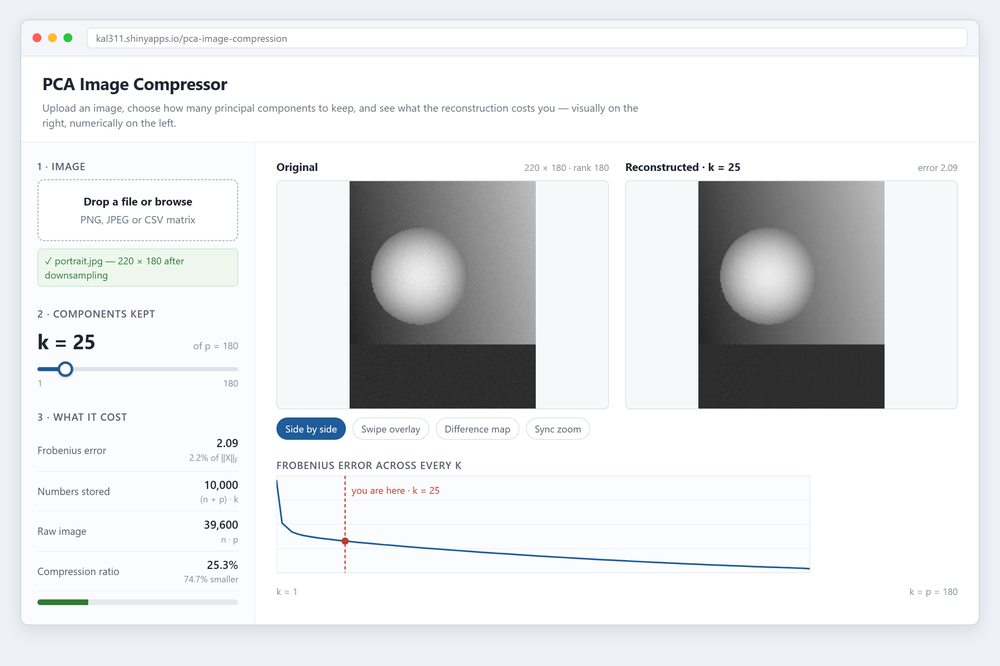

PCA Image Compressor — app design
Part 3: what the app does, how it is laid out, and why
What the app does
You upload an image of your own, drag one slider to pick how many principal components \(k\) to keep, and immediately see your picture rebuilt from just those \(k\) components sitting next to the original. Under the slider the app tells you what the choice cost, the Frobenius error \(\lVert X - X_{(k)}\rVert_F\), and what it bought, the storage ratio \((n + p)k \,/\, np\). The whole idea is to turn \(k\) from an abstract number into something you can feel: pull the slider down and watch a face dissolve into horizontal banding, push it back up and watch it return, while the two numbers on the left move in opposite directions.
It takes PNG, JPEG or a raw CSV matrix, so the same files used in the static analysis can be dropped straight in. Colour images get converted to grayscale with Rec. 601 luma weights, and anything bigger than 320 px on its long side is downsampled, because the eigendecomposition of \(X'X\) is \(O(p^3)\) and a full-resolution photo would make the slider stutter.
The mockup

Layout, and why it’s laid out that way
Controls left, results right
Everything you do lives in one narrow column on the left, numbered one to three down the page: pick a file, pick \(k\), read the cost. Everything you look at lives in the wide area on the right. The split is deliberate. The images are the reason the app exists and they need the horizontal room, while the controls are small and are easier to find when they’re collected in one predictable place rather than scattered around the pictures.
The order also matches the actual dependency chain. You can’t choose \(k\) before you have an image, and the cost figures mean nothing until you’ve chosen \(k\), so reading the sidebar top to bottom is the same thing as using the app.
The slider sits right on top of the numbers it moves
The \(k\) slider is the only control anyone touches repeatedly, so it gets the biggest type in the sidebar and a block of its own. More importantly, the three cost figures sit immediately underneath it rather than off in a corner of the main panel. Those figures are the feedback for the slider, and putting half a screen between cause and effect would force you to watch two places at once while dragging. The current value is printed as a number instead of being left for you to guess from the knob position, because “which \(k\) was that?” is exactly what you’ll want to know the moment you find a setting you like.
The slider’s maximum isn’t a fixed constant. It’s \(p\), the number of columns in whatever you uploaded, and the endpoint labels say so. A slider that let you ask for \(k > p\) would be offering a state the mathematics doesn’t have.
Comparing the two images
The default is plain side by side at the same display size, original on the left, reconstruction on the right, because left-to-right reading order already means before-and-after. Both panels use the same grayscale range, taken from the original, so any difference you see is a real difference in the pixels rather than an artefact of two independent colour scales. That matters more than it sounds: a rank-\(k\) reconstruction can overshoot outside the original range, and scaling each panel on its own would quietly hide it.
Side by side is the right default because it’s the least surprising, but it’s weak on low-contrast differences. At \(k = 40\) the two panels look identical even though they aren’t. So three other comparison modes sit as a row of chips directly under the images:
- Swipe overlay, the two images stacked with a draggable vertical divider. Best for finding where detail was lost, because your eye compares across one edge instead of across a gap.
- Difference map, \(\lvert X - X_{(k)} \rvert\) drawn as its own image. This turns the Frobenius error from a single number into a picture of where the error actually is, which is usually edges and texture.
- Sync zoom, panning and zooming both panels together, for looking at a face or some patch of fine detail at 1:1.
They’re chips rather than a dropdown so all four options are visible at once. There are few enough that hiding them behind a menu would cost more than the row of space it saves.
The error curve goes last
Below the images, full width, is Error(\(k\)) for every \(k\) from 1 to \(p\) with a dashed marker at wherever you currently are. This answers the one question the side-by-side view can’t: am I on the steep part or the flat part? Someone who has dragged to \(k = 25\) can see at a glance that the curve went nearly flat around \(k = 10\) and that another 50 components would buy almost nothing. The marker tracks the slider live, which makes the curve feel like part of the control rather than a chart off to one side.
It’s at the bottom because it’s interpretive rather than primary. The pictures answer “does this look acceptable”; the curve answers “was that a sensible place to stop”.
What the app tells you back
- Immediately: the reconstructed panel and the curve marker both update on the same drag. There’s no Compute button, because the decomposition happens once when the file lands, so changing \(k\) is a single matrix product and is fast enough to feel continuous.
- On upload: a green line naming the file and its dimensions after downsampling, so nobody is left wondering why \(p\) is 180 when their photo was 1400 px wide.
- During the slow bit: a progress indicator while \(X'X\) is decomposed, which is the only step with a noticeable wait.
- In numbers: error given both absolutely and as a percentage of \(\lVert X \rVert_F\), since a bare Frobenius norm means nothing without a scale, and the compression ratio given as a percentage plus a filled bar so the trade-off reads at a glance instead of having to be parsed out of four figures.
- When something breaks: a plain-language banner in the main panel for a wrong file type, a non-numeric CSV or missing values, rather than a red R traceback.
How it’s built
Shiny, deployed to shinyapps.io. It calls the same pca_compress() function that produced the static analysis, sourced rather than copied, so there’s only ever one implementation of the algebra. The eigendecomposition is cached per upload instead of being redone on every slider tick, which is what makes continuous dragging possible at all.
The live app: https://kal311.shinyapps.io/pca-image-compression/